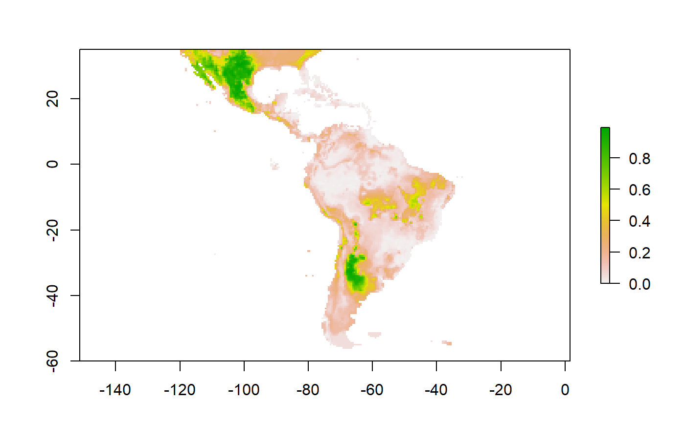
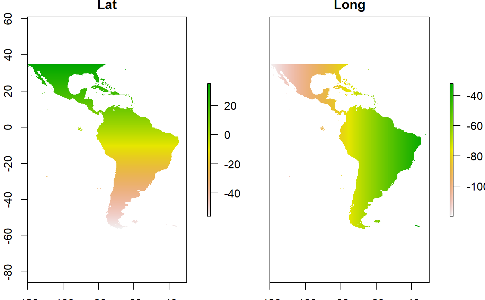
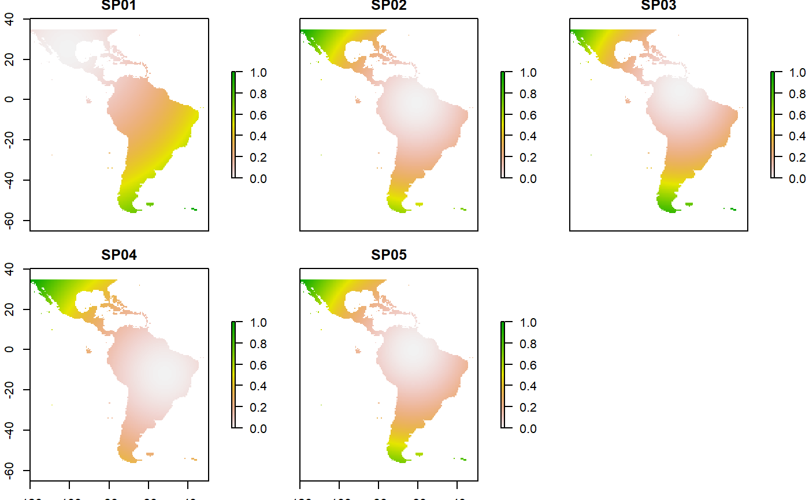

Create spatial predictor variables to reduce overprediction of species distribution models
Source:R/MSDM_Priori.R
MSDM_Priori.RdThis function creates rasters that, together with environmental variables, can be used to construct constrained species distribution models spatial
MSDM_Priori( records, x = NA, y = NA, sp = NA, method = c("XY", "MIN", "CML", "KER"), rasterlayer = NULL, dirsave = NULL )
Arguments
| records | data.frame. A database with geographical coordinates of species presences used to create species distribution models. |
|---|---|
| x | character. Column name with longitude values. |
| y | character. Column name with latitude values. |
| sp | character. Column name with species names. It would be desirable that the species names are as simple as possible and with no space between the genus and the specific epithet (e.g. Alchornea_glandulosa). Do not use author names, symbols or accents. For example, substitute names like Senna chacoensis (L.Bravo) H.S.Irwin & Barneby or Erythrina crista-galli L., for Senna_chacoensis and Erythrina_cristagalli. It is mandatory that the species names and the raster are the same. |
| method | character. A character string indicating which MSDM the method that must be used. The next methods are available: XY, MIN, CML, and KER. Usage method = 'CML' |
| rasterlayer | raster object. A raster, stack, or brick object that will be used to construct species distribution models. This object will be used as a basis for creating MSDM variables with the same resolution, extent, and pattern of empty cells that the environmental variables. It is advisable to use a raster of an environmental layer that will be used in the future to create the species distribution models in order not to have problems (e.g. resolution, extent, cells with NA) between environmental and constraining raster. |
| dirsave | character. A character string indicating the directory where result must be saved. |
Value
This function save raster files (with geotiff format) in a folder named with the MSDM method. Such raster/s have to be used as covariate together with environmental variables at the moment to construct species distribution models. A pair of raster layers are created for all species set for XY method; on the contrary, CML, MIN, and KER create a species-specific raster layer.
Details
XY (Latlong method). It assumes that spatial structure can partially explain species distribution (Bahn & Mcgill, 2007). Two raster layers will be created, containing the latitude and longitude of pixels in decimal degrees, respectively. These raster layers should be included as covariates with the environmental layers to construct species distribution models.
MIN (Nearest neighbour distance). Compiled and adapted from Allouche et al. (2008), this method calculates for each cel the Euclidian geographic distance to the nearest presence point.
CML (Cumulative distance method). Compiled and adapted from Allouche et al. (2008), it assumes that pixels closer to presences are likely included in species distributions. A raster layer will be created containing the sum of Euclidian geographic distances from each pixel to all occurrences of a species. Obtained values are normalized to vary from zero to one. This raster layer should be included as covariates with the environmental layers to construct species distribution models.
KER (Kernel method). Also compiled and adapted from Allouche et al. (2008), this method, like CML, assumes that pixels located in areas with a higher density of occurrences are likely included in the actual species distribution. A raster layer will be created containing the Gaussian values based on the density of occurrences of a species. Standard deviation of the Gaussian distribution was the maximum value in a vector of minimum distances between pairs of occurrences of a species. Gaussian values are normalized to vary from zero to one. This raster layer should be included as covariates with the environmental layers to construct species distribution models.
Further methodological and performance information of these methods see Mendes et al. (2020).
References
Mendes, P.; Velazco S.J.E.; Andrade, A.F.A.; De Marco, P. (2020) Dealing with overprediction in species distribution models: how adding distance constraints can improve model accuracy, Ecological Modelling, in press. https://doi.org/10.1016/j.ecolmodel.2020.109180
Allouche, O.; Steinitz, O.; Rotem, D.; Rosenfeld, A.; Kadmon, R. (2008). Incorporating distance constraints into species distribution models. Journal of Applied Ecology, 45(2), 599-609. doi:10.1111/j.1365-2664.2007.01445.x
Bahn, V.; Mcgill, B. J. (2007). Can niche-based distribution models outperform spatial interpolation? Global Ecology and Biogeography, 16(6), 733-742. doi:10.1111/j.1466-8238.2007.00331.x
See also
Examples
library(MSDM) library(raster) # Raster data and a data.frame with occurrences will be loaded data("sp_sdm") data("occurrences") head(occurrences)#> sp x y #> 1 SP01 -87.54180 13.95804 #> 2 SP01 -103.54173 21.29134 #> 3 SP01 -101.87507 20.95801 #> 4 SP01 -99.70841 24.87466 #> 5 SP01 -100.37508 30.29131 #> 6 SP01 -100.20841 20.70801class(sp_sdm)#> [1] "RasterBrick" #> attr(,"package") #> [1] "raster"#> [1] "RasterLayer" #> attr(,"package") #> [1] "raster"plot(sp_sdm)#> [1] "C:\\Users\\santi\\AppData\\Local\\Temp\\Rtmp8yrgAu"MSDM_Priori(records = occurrences, x = "x", y = "y", sp = "sp", method = "XY", rasterlayer = sp_sdm, dirsave = tmdir)#> Warning: NOT UPDATED FOR PROJ >= 6#> Warning: NOT UPDATED FOR PROJ >= 6#> results are in: #> C:\Users\santi\AppData\Local\Temp\Rtmp8yrgAu/MSDM_XY#> [1] "C:\\Users\\santi\\AppData\\Local\\Temp\\Rtmp8yrgAu/MSDM_XY"# plot results new_var <- list.files(rdir, pattern = ".tif", full.names = TRUE) new_var <- stack(new_var) plot(new_var)# CML method---- MSDM_Priori(records = occurrences, x = "x", y = "y", sp = "sp", method = "CML", rasterlayer = sp_sdm, dirsave = tmdir)#> results are in: #> C:\Users\santi\AppData\Local\Temp\Rtmp8yrgAu/MSDM_CML#> [1] "C:\\Users\\santi\\AppData\\Local\\Temp\\Rtmp8yrgAu/MSDM_CML"# shell.exec(rdir) # plot results new_var <- list.files(rdir, pattern = ".tif", full.names = TRUE) new_var <- stack(new_var) plot(new_var)# Note that a raster is created for each species